Farmopul 2 人用説明書 (私家版)
Archinerd によるマイクロプルのリテーマ
1 人用のソリティア パズルまたは 2 人用の対戦ゲーム

目次
- コンポーネント
- Farmopul とは
- 用語
- ゲームの手順
- ゲームの終了
- ゲームの勝敗
- 得点計算
- 手札関係のルール
- タイルを場に出すときのルール
- 自分の所有地と連続プレイに関するルール
- 農場に農夫 (マーカー) を乗せるときのルール
- 付録 A: リンク
- 付録 B: 3 人でプレイする場合のルール変更点
- 付録 C: 4 人でプレイする場合のルール変更点
- 付録 D: アプリ版 micropul
コンポーネント
- タイル 48 枚
- 農夫 6 個 (マーカー 2 色 3 個ずつ)
Farmopul とは
Farmopul は以下のものを集めて点数を競うゲームです。
- 自分が確保した閉じた農場
- 自分の所有地
- 自分の手札
用語
- タイル
-
農地や作業小屋、風車小屋、空き地が描かれている。
- スタートタイル
-
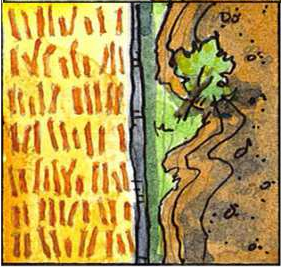
ゲームのセットアップ時に場に置かれる左の模様のタイル。
- 大地
-
シャッフルされて伏せられたまま積まれたタイルの山。全てのタイルの供給元。
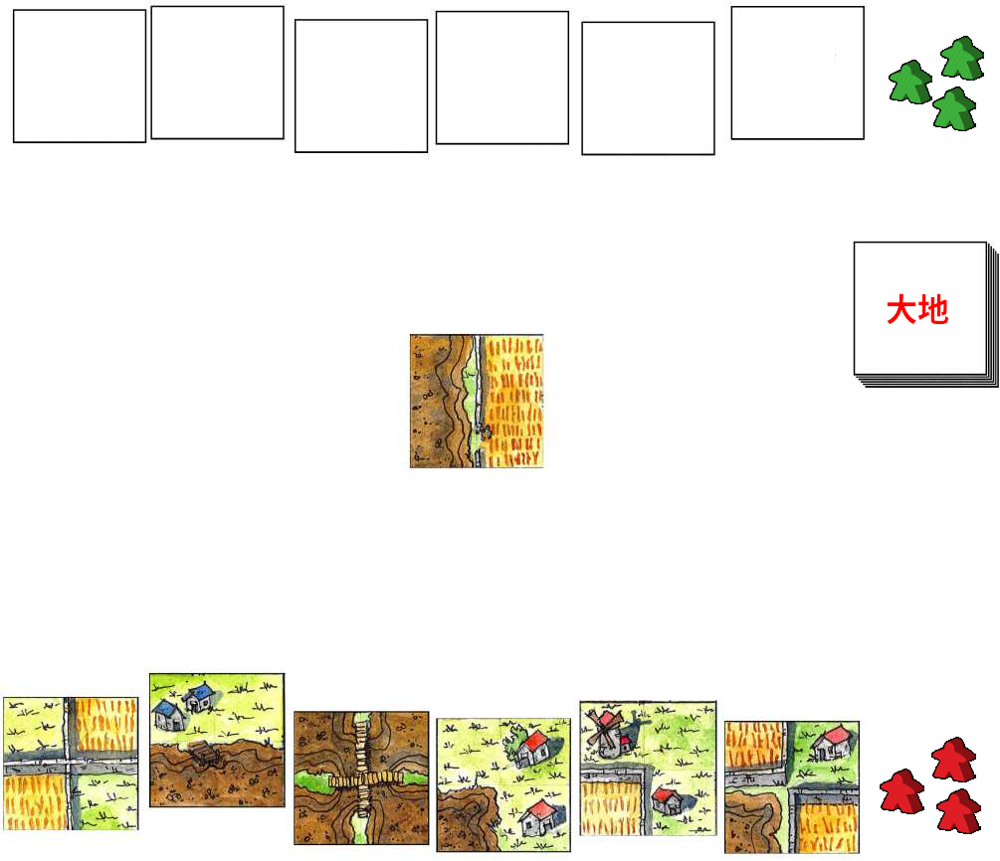 - 自分の所有地
大地から引いた伏せられたままの自分専用のタイルの山。ゲームスタート時は存在しない。
- 手札
- プレイにより増減する。ゲームスタート時の枚数は 6 枚。で 6 枚を超えて持つことはできない。
- 場
-
タイルを並べてゆく場所
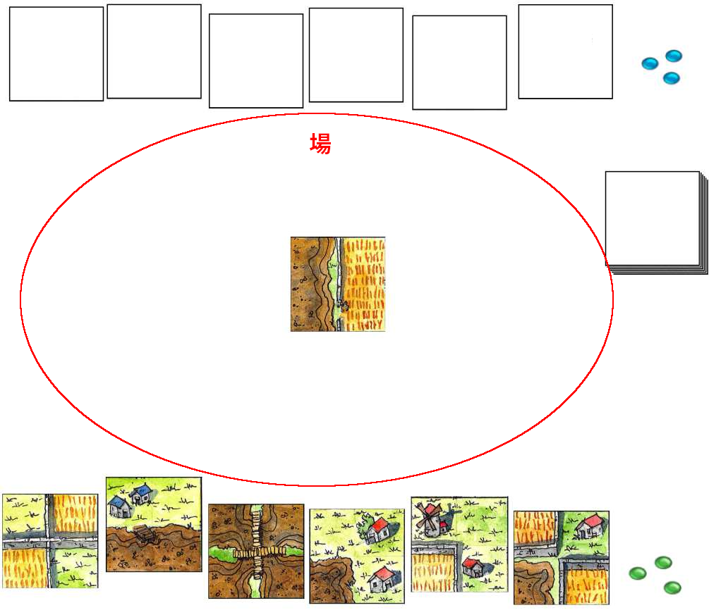 - 農夫
-
マーカーを農夫と呼ぶ。農夫を農場に乗せるとその農場はそのプレイヤーに確保される。
- 農地
-
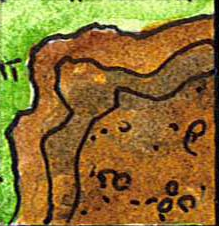
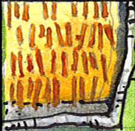
タイルに描かれている農耕可能な土地。畑と土壌がある。
- 大きな農地
-
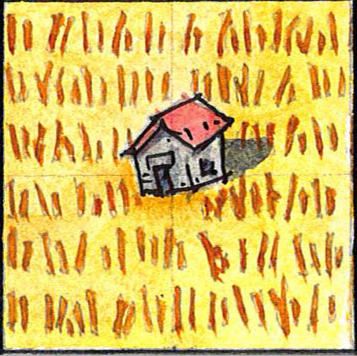
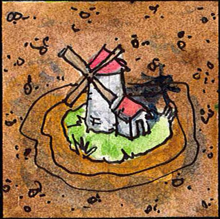
タイル全面に描かれた大きな農地。右例のように農地 4 つと作業小屋や風車小屋が合わさっている。大きな農地上の作業小屋や風車小屋はタイルの 4 つの辺全てに接している。
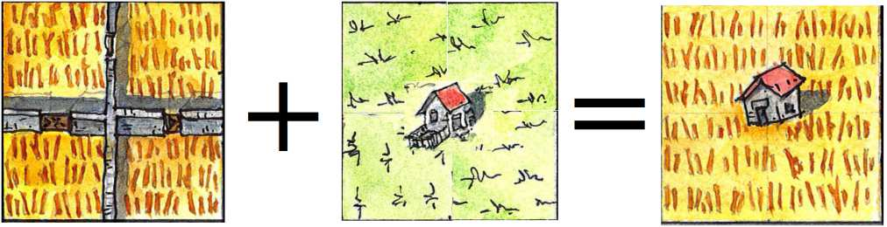 - 農場
-
ひとかたまりになった同じ種類の農地の集まり。農地単体であっても農場ではある。
- 閉じている
-
農場のうち、異なる種類の農地、作業小屋、風車小屋、空き地に囲まれて周囲から切り離されており、それ以上農地が増えない農場を閉じた農場と呼び、その農場は閉じているという。右図では右中段のタイルがプレイされることで土の農場が閉じる。
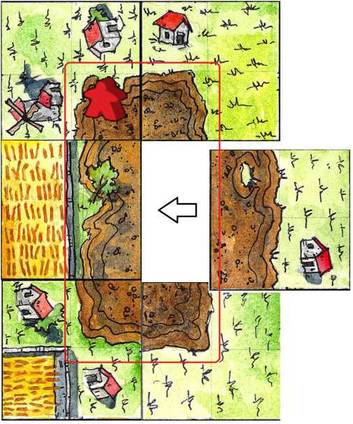 - 作業小屋
-
1 棟の作業小屋、2 棟の作業小屋の 2 種類がある。
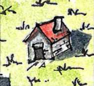 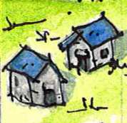 - 風車小屋
- 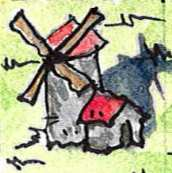
ゲームの進め方
- 最初に親を決めます。親は大地とスタートタイルを用意すること以外は普通のただのプレイヤーです。有利不利はないので、だれが親でもかまいません。
- 親はスタートタイル以外のタイルを伏せたままシャッフルし大地を用意します。親としての役割はこれで終わりです。
- 各プレイヤーは大地から 6 枚のタイルを引き手札にします。これでプレイの準備ができました。
最初のプレイヤーをじゃんけんでもダイスでもカードカットでも好きな方法でランダムに決めます。
-
最初のプレイヤーから各プレイヤーは以下の 3 つのうちのどれかのアクションを実行します。パスはできません。
- 自分の手札のタイルを 1 枚、場に出す。
- 自分の所有地から自分の手札にタイルを 1 枚補充する。
- 農場に自分の農民を乗せて確保する。
- ゲームが終了するまで 5 を繰り返します。
- ゲームが終わったら得点計算をします。
ゲームの終了
以下のどちらかの場合にゲームは終わります。
- 大地から最後の 1 枚のタイルが引かれ、自分の所有地もしくは相手の所有地に加えられた。
- 自分の手番だが 3 つの選択肢のどれもプレイできない。
ゲームの勝敗
得点計算の結果、得点が多い方が勝者となります。
ただし ‘ゲームの終了 2’ でゲームが終了した場合はプレイできなかったプレイヤーは即時に敗者となります。
得点計算
- 自分の所有地のタイル 1 枚に付き 2 点
- 自分の手札のタイル 1 枚に付き 1 点
- 自分の確保が確定した閉じた農場に含まれる農地 1 つにつき 1 点。大きな農地は 1 点として数える。
手札関係のルール
- 手札のタイルの数は 6 枚を越えてはいけません。
- 手札の補充は自分の所有地からしかできず直接大地から補充はできません。
タイルを場に出すときのルール
-
プレイするタイルはすでに置かれているタイルに隣接してつながるように配置しなければならなりません。下図の赤線で囲まれた場所にしかタイルを置くことができません。

-
タイル同士は下図のように同じ種類の最低 1 組の農地同士が必ず接していなければなりません。
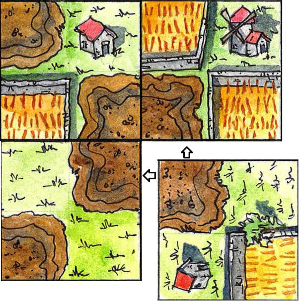 -
下図のように異なる種類の農地は接してはいけません。この例ではプレイタイルを 90 度反時計回りに回すとタイルを置くことができます。
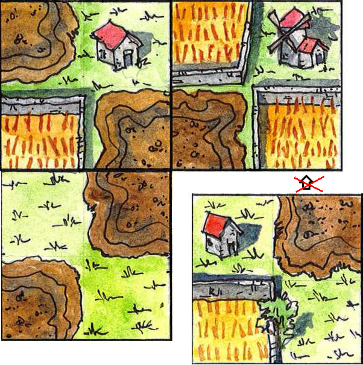 タイルを置くことができた場合、プレイタイルと隣接タイルの農地と作業小屋が接しているか必ずチェックしなければなりません。なぜかというと作業小屋と農地が接すると大地からタイルを引いて自分の所有地にすることができるからです。大地からタイルを引いて自分の所有地にすることについては後で述べます。
作業小屋、風車小屋、空き地は隣接タイルの農地に接してもかまいませんし、接さなくてもかまいません。接していない場合は大地からタイルを引くことも連続プレイもできません。
自分の所有地と連続プレイに関するルール
大地からタイルを引き自分の所有地にする
下のようにタイルをプレイすると、農地と作業小屋が隣り合います。このときプレイヤーは大地からタイルを 1 枚伏せたま引き、それを自分の所有地にすることができます。また、農地と風車小屋隣り合っているので、もう 1 度だけ連続プレイをすることもできます。
- 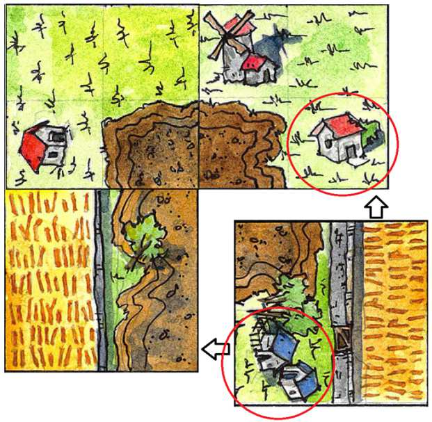
1 棟の作業小屋が隣接タイルの農地に接しているため大地からタイルを 1 枚伏せたまま引いて自分の所有地に加えることができます。自分の所有地のタイルは伏せたままにしておき、手札になるまで見てはいけません。
また 2 棟の作業小屋も隣接タイルの農地に接しています。そのため同様に 2 枚のタイルを大地から自分の所有地に伏せたまま引くことができます。- 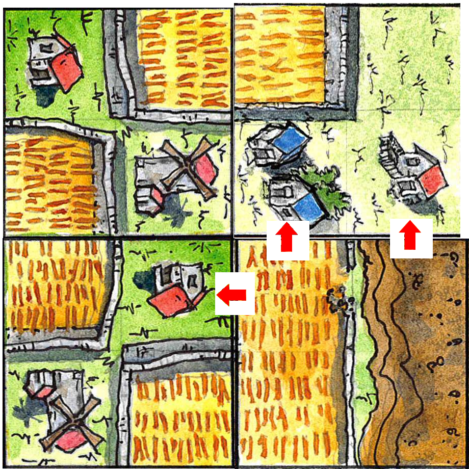
プレイタイルの左上の農地が隣接タイルの 1 棟の作業小屋と 2 棟の作業小屋に接しています。この場合隣接タイルの作業小屋の棟数の数の合計 3 つと同数のタイル 3 枚を大地から自分の所有地に伏せたままで引くことができます。また右上の農地も隣接タイルの 1 棟の作業小屋に接しているので更にもう 1 枚のタイルを大地から自分の所有地に伏せた状態で引くことができます。
- 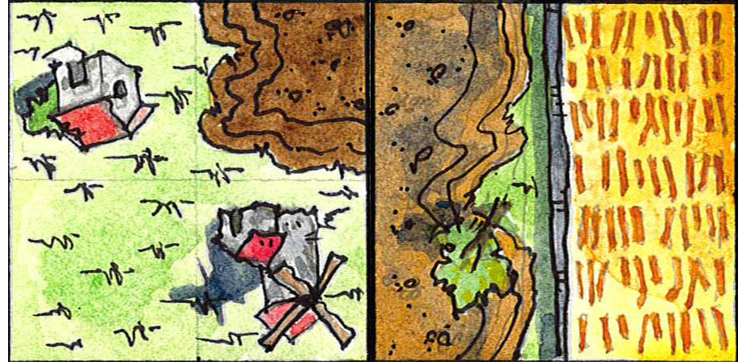
土壌の農地が隣接タイルの風車小屋に接しているため、プレイヤーはもう 1 度連続してプレイすることができます。その際のプレイはゲームの手順 5 で説明した 3 つのアクションの中から 1 つを選んで実行します。その結果再び風車小屋がプレイタイルもしくは隣接タイルの農地に接した場合は再プレイは行うことはできません。つまり再プレイは自分のプレイでは 1 度だけです。
自分の所有地に関するルール
常にタイルは伏せたままにしておいて見てはいけませんし見せてもいけません。
自分の所有地にタイルがあるのなら自分の手番で自分の所有地から手札にタイルを補充することができます
- ゲーム中における自分の所有地の最大タイル数の制限はありません。
農場に農夫 (マーカー) を乗せるときのルール
農場の確保
プレイヤーは自分の手番のときに好きな農場に農夫を置くことができます。
農場の上に農夫を置くとその農場が自分のものとして確保されます。農夫を置くとその取り消しはできませんし、カルカソンヌのミープルのようにプレイで回収することもできません。
確保した農場が最終的に閉じているなら、得点計算項で触れたように、その農場に含まれる農地の数が全て自分の得点になります (大きな農地は 1 点として計算します)。
しかし農場が閉じていなければその農場は得点とはなりません。農夫を農場に置けないとき
前述したようにプレイヤーは自分の手番のときに好きな農場に農夫を置くことができますが例外もあります。
自分の手番の前にすでに農夫が置かれていて、誰かによって確保済みの農場には農夫を置くことはできません。
プレイの結果農夫を置いた複数の農場が統合された場合
まだ閉じていない複数の農場上にそれぞれ異なるプレイヤーの農夫が置かれているとします。
プレイが進んだ結果それらの農場が 1 つに統合される場合があります。それらの農場は統合されますが、農夫による確保は帳消しになり誰の得点源にもならない死んだ農場になります。死んだ農場は誰にも確保されておらず誰も確保できない農場になります。
このルールを応用して、相手が確保している農場に、自分が確保している農場を統合させて相手の農場が相手の得点になるのを妨害する、ということもできます。もちろんその際、貴重な自分の農夫を 1 つかそれ以上消費することになり得点にもなりません。
また異なるパターンとして、まだ閉じていない複数の農場上にそれぞれ自分の農夫が置かれているものとします。
プレイの結果それらの農場が統合された場合、その統合された農場が最終的に閉じられた場合は自分の得点となります。ただし農夫が複数乗っていても農夫の数に関係なく、農地の数だけ得点計算されます。
付録 A: リンク
- micropul 公式サイト
- Board Game Geek : Files セクションに Famopul のシートあり
- prismpowder: micropul の日本語 Wiki
- TKDK PNP: micropul の日本語のブログ記事
- ボードゲーマ: micropul のページ
付録 B: 3 人でプレイする場合のルール変更点
プレイヤーが 3 人の場合は以下のようにルールが変更されるか、あるいは変更されません。
- 農夫は 1 人につき 2 つに減らす。
- 時計回りにプレイする。
- その他は 2 人用ルールと同一。タイルも 48 枚のまま。
付録 C: 4 人でプレイする場合のルール変更点
プレイヤーが 4 人の場合は以下のようにルールが変更されるか、あるいは変更されません。
- 使用タイルは 2 セット、合計 96 枚。
- 農夫は 1 人につき 3 つで変更なし。
- 時計回りにプレイする。
- その他は 2 人用ルールと同一。
付録 D: アプリ版 micropul
以下はソリティア
- Micropulease : for Android (Google Play), Famopul のタイルを選択できる。
- github of Micropulease : for Android
- micropul : for Windows, MacOS and Linux (おしゃれでお勧め)
- micropul : for Windows and MacOS
以下はオンライン対戦。
- Micropul : BoardSpace online (Windows, MacOS, Linux, iPhone, Android, Firefox, Google Chrome, Safari; 使い方がさっぱりわからない)
レッツエンジョイ！！